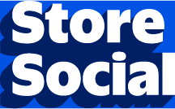
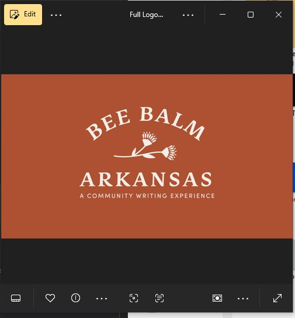
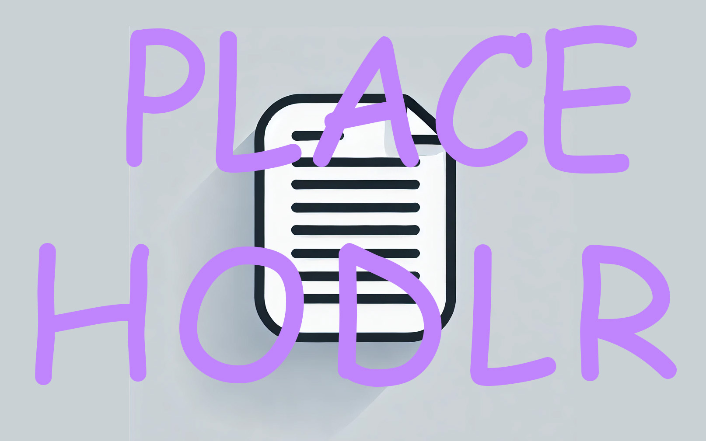

Store Social at Walmart
Editorial operation behind a 32M-follower brand page

Editorial operation behind a 32M-follower brand page

Community content & programming for a literary nonprofit

Brand copy for a 32M-follower Facebook page
I build the infrastructure behind content — not just the pieces, but the system that makes the pieces work.
Right now that means running the creative editorial operation behind Store Social at Walmart: writing the content briefs that guide 4,800+ store associates, and curating their work to a 32-million-follower Facebook page. Before that, I built a podcast from scratch for a small literary nonprofit in Arkansas — 20 episodes, zero budget, entirely because I believed in the mission.
The through-line isn't a medium. It's a way of working: producer-first, systems-minded, depth over volume. I'm most useful when something needs to be built, shaped into something coherent, and made to last without constant tending.
I'm based in Boston, originally from Fayetteville. When I'm not at it, I'm watching horror films with my dog Miko. He has strong opinions about the third act.
Have a project in mind? I'd love to hear about it.
Or find me elsewhere: